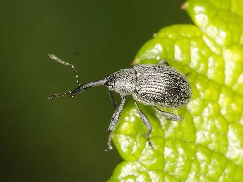

花蕾附近有长吻甲虫，未开的花蕾下垂
要同时看到长吻甲虫，以及还没开放、已经下垂的花蕾。花已经打开、甲虫停在花瓣上的，用花上甲虫那一条。

先看哪里
托起下垂但尚未开放的花蕾，看花蕾下方的短梗是否有切痕，再检查旁边花蕾上是否有带长吻的小甲虫。
可能原因与下一步
一些花象甲会损伤未开放的花蕾。在草莓上可把受损花梗与同株挺立的花梗对照。霜冻和碰伤也可能损伤花蕾。
怎样区分相似问题
沿着垂下的花蕾往回看，花梗半断与花瓣上有洞是不同现象，还应查看未开的花蕾。用放大镜看花苞表面，寻找肉眼远看容易漏掉的细小刺孔。
捡起一枚刚落的花苞，看它带下来的那一小段花梗，再找花序上对应的断头。在草莓上，未开的花苞有刺孔、花梗又像被咬断一半，是花蕾象甲活动的线索。若花已开，霜冻后花心才变黑，则要检查冻伤。
现在可以做什么
在草莓植株上检查受损花蕾正下方弯折处，留意小型有喙甲虫；清理掉落花蕾前先拍下连接处。
先看种植区边缘几簇花，再往里看几簇。拍照时把完好花苞与受损花苞放在一起，便于比较。如果只有水管拖过的地方折了一根花梗，还不足以判断是虫害。
接下来观察什么
观察下一簇花新出现多少被切断的花蕾；若损失持续，请当地果树技术人员鉴定虫种并提供防治建议。
记下这些花序还有几枚未开的花苞。等花陆续开放，把新断口和上次已经空下来的花梗分开记录，才能判断损失是否还在增加。
在受损花簇下找落蕾，把落蕾残梗与植株上尚未完全断开的梗比较。正常花谢后整齐脱落，和未开蕾先被咬断，发生顺序不同。